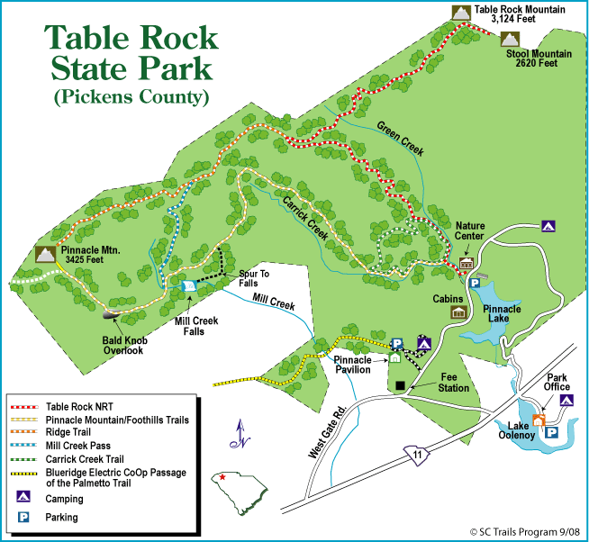

{% include preamble.html %}
Table Rock
Park web page
Brochure (PDF)
Park hours: opens at 7 am, closes at posted time (various seasonally).
Parking:35.031982,-82.700272
Directions: From Greenville, drive north on US 276. SC 11 will join US 276 for approximately 5 miles and then branch left. Follow SC 11. Pass the first park entrance on the right, continue across the bridge, and turn right at the West Gate/Camping entrance sign. Drive .5 mile and turn right into the Table Rock State Park entrance. Drive .7 mile and turn right into the parking area across from the Nature Center.

Parking fee: Memorial Day Saturday through the Sunday following Thanksgiving: $5 adults; $3.25 SC seniors (age 65 & older); $3/ child age 6-15; Free for children 5 and younger. This admission includes access to our designated swimming area when it is open.
Remainder of year: $2 age 16+; $1.25 SC Seniors; age 15 and younger free.
Hiking routes:
Pinnacle Mountain hike description
{% include postamble.html %}